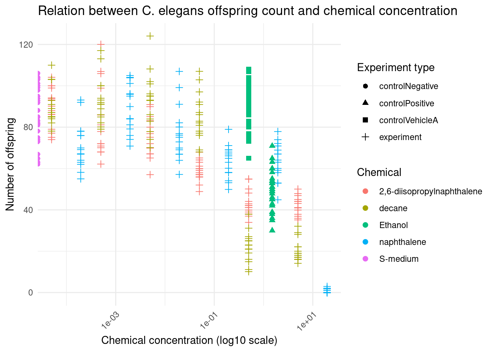
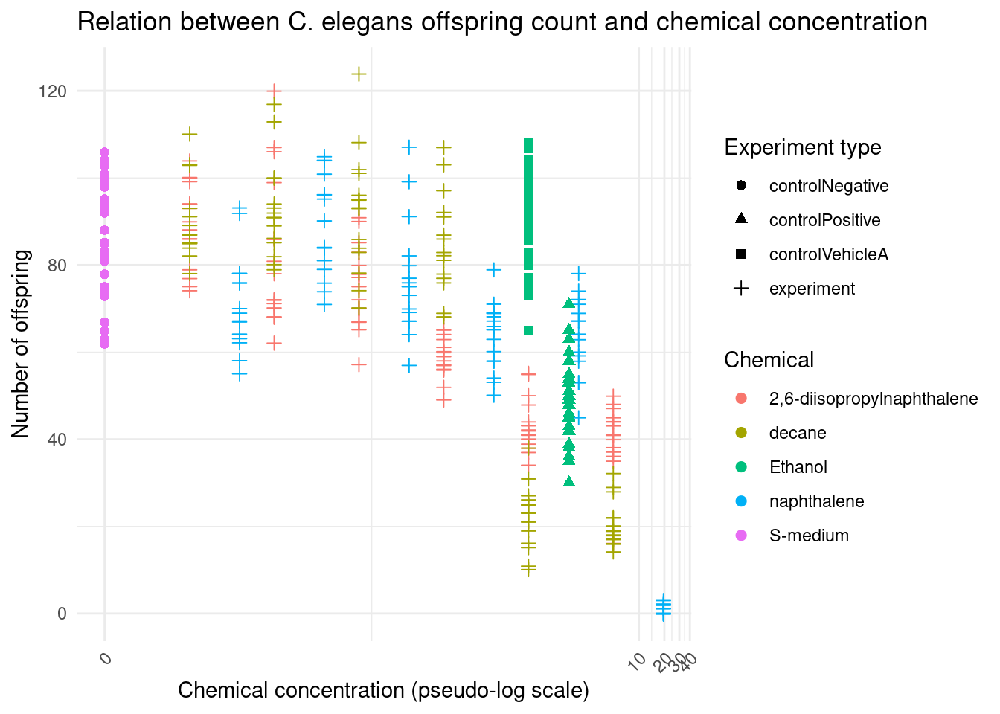
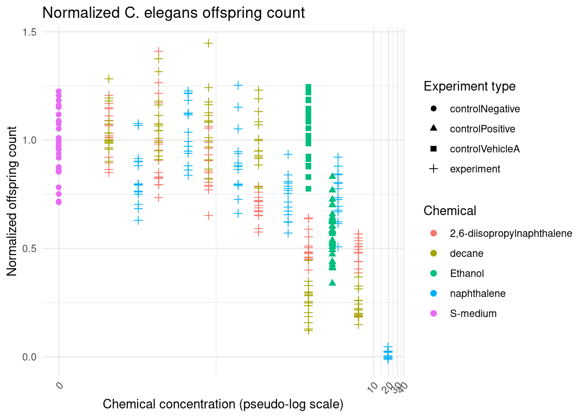
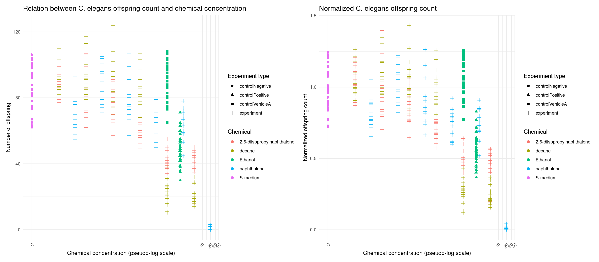
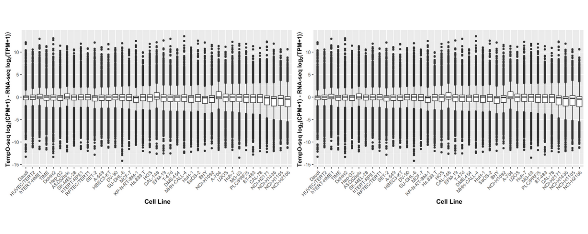

6 Reproducible Science
In this chapter, I demonstrate how I approach different steps of the data analysis and research cycle. First, I analyse an existing dataset using R and interpret the results. After that, I will examine a scientific article, take a closer look at the R code used by the authors and evaluate how reproducible their research is.
I will use these examples to practise analysing existing data, interpreting results and thinking about possible follow-up research. I will also explain my choices and findings in my own words.
6.1 C. elegans data analysis
For the first part, I will analyse a dataset provided by the HU research group Innovative Testing in Life Sciences & Chemistry. The dataset contains measurements from an experiment in which C. elegans were exposed to different chemicals and concentrations. The number of offspring was measured to investigate whether the chemicals affect reproduction.
The dataset was already collected and provided as an Excel file. My task is to explore the data, visualize the results and investigate what can be learned from them.
6.1.1 Data preparation
First, I need to load the necessary packages and import the data into R. The readxl package provides the read_excel() function for reading Excel files. I also use tidyverse for data manipulation and visualization. Finally, patchwork allows me to display multiple plots next to each other.
With the packages loaded, I can now import the dataset.
After importing the data, I first inspect its structure. I check the number of rows and columns and select the variables that are most relevant for this analysis.
## [1] 360 34## Rows: 360
## Columns: 4
## $ RawData <dbl> 44, 37, 45, 47, 41, 35, 41, 36, 40, 38, 44, 48, 43, 50, 16…
## $ compName <chr> "2,6-diisopropylnaphthalene", "2,6-diisopropylnaphthalene"…
## $ compConcentration <chr> "4.99", "4.99", "4.99", "4.99", "4.99", "4.99", "4.99", "4…
## $ expType <chr> "experiment", "experiment", "experiment", "experiment", "e…## [1] 5The dataset contains 360 rows and 34 columns. The most relevant variables for this analysis are:
RawData: the measured number of offspring.compName: the name of the chemical.compConcentration: the concentration used.expType: the experiment type, such as a control or chemical treatment.
I also check the data types before starting the visualization. The concentration variable is stored as character data, although it should be numeric. I convert it before plotting. I also account for decimal commas in the original values.
c_elegans$compConcentration <- as.numeric(
str_replace(as.character(c_elegans$compConcentration), ",", ".")
)
# Check whether any missing values are present after conversion
sum(is.na(c_elegans$compConcentration))## [1] 06.1.2 Raw data visualization
Now that the concentration variable is numeric, I can create a first scatter plot. I use the concentration on the x-axis and the number of offspring on the y-axis. Different colours represent the chemicals, while different shapes distinguish the experiment types.

However, the first plot does not display all observations correctly. Something seems to be missing. This is because a logarithmic transformation cannot display a concentration of zero.
To investigate this, I check how many observations have a concentration of zero or lower and which chemicals they belong to.
## [1] 30## # A tibble: 1 × 4
## compName expType compConcentration n
## <chr> <chr> <dbl> <int>
## 1 S-medium controlNegative 0 30There are 30 observations with a concentration of zero. These observations belong to the negative control (S-medium). This makes sense, since the negative control does not contain a test chemical. However, I still want to include these observations in my visualization.
To solve this, I determine the smallest positive concentration in the dataset and use a pseudo-logarithmic scale instead of a regular log10 scale. This allows zero concentrations to remain visible while still displaying the other concentrations on a logarithmic-like scale.
# Determine the smallest positive concentration
min_pos <- min(
c_elegans$compConcentration[
c_elegans$compConcentration > 0
],
na.rm = TRUE
)I now recreate the plot using a pseudo-log transformation.
p1 <- ggplot(data = c_elegans,
aes(x = compConcentration,
y = RawData,
color = compName,
shape = expType)) +
geom_jitter(width = 0, height = 0.15, size = 2) +
scale_x_continuous(
trans = scales::pseudo_log_trans(
base = 10,
sigma = min_pos / 10
)
) +
labs(title = "Relation between C. elegans offspring count and chemical concentration",
y = "Number of offspring",
x = "Chemical concentration (pseudo-log scale)",
color = "Chemical",
shape = "Experiment type") +
theme_minimal() +
theme(axis.text.x = element_text(angle = 45, hjust = 1))
p1
The new plot displays the observations more clearly, including the negative control. One important detail is that the concentration units are not the same for all compounds. Most chemicals are expressed in nM, while ethanol and S-medium are expressed in percentages. Therefore, the x-axis is mainly useful for viewing the concentration range within each compound, rather than directly comparing concentrations between all compounds.
Looking at the plot, some chemicals appear to show a decrease in offspring count as their concentration increases. However, the pattern is not equally clear for every chemical. At this stage, this is only an initial observation based on the visualization.
6.1.3 Normalization
Next, I normalize the data using the negative control as a reference. This makes it easier to interpret the measurements relative to the same baseline.
First, I calculate the mean offspring count of the negative control. I then divide all measurements by this mean to create a new variable containing the normalized values.
# Calculate the mean of the negative control
mean_negative <- mean(
c_elegans$RawData[c_elegans$expType == "controlNegative"],
na.rm = TRUE
)
# Create a new column with normalized values
c_elegans$RawData_norm <- c_elegans$RawData / mean_negative
# Check whether the normalization worked as expected
mean(c_elegans$RawData_norm[
c_elegans$expType == "controlNegative"
], na.rm = TRUE)## [1] 1The mean of the normalized negative control is now 1, as expected. This means that all measurements are expressed relative to the average offspring count of the negative control.
I can now create a second scatter plot using the normalized values.
p2 <- ggplot(data = c_elegans,
aes(x = compConcentration,
y = RawData_norm,
color = compName,
shape = expType)) +
geom_jitter(width = 0, height = 0.02, size = 2) +
scale_x_continuous(
trans = scales::pseudo_log_trans(
base = 10,
sigma = min_pos / 10
)
) +
labs(title = "Normalized C. elegans offspring count",
y = "Normalized offspring count",
x = "Chemical concentration (pseudo-log scale)",
color = "Chemical",
shape = "Experiment type") +
theme_minimal() +
theme(axis.text.x = element_text(angle = 45, hjust = 1))
p2
6.1.4 Results and interpretation
To compare the original and normalized data, I display both plots next to each other.

The negative control in this experiment is S-medium, while ethanol is used as the positive control. Positive, negative and vehicle controls each have a different purpose and help assess the reliability of an experiment.
The negative control (S-medium) provides a baseline measurement of offspring production without exposure to a test chemical. The positive control (ethanol) is used to check whether the experiment can detect an expected biological effect. If the positive control does not produce the expected response, this could indicate a problem with the experimental setup or assay.
A vehicle control is used to determine whether the solvent or medium used to deliver a chemical has an effect of its own. This is important because it helps distinguish effects caused by the test chemical from effects caused by the vehicle.
By normalizing the data, all measurements are expressed relative to the average of the negative control. This sets the negative control mean to 1. A normalized value of 0.5 represents half the offspring production of the negative control mean, while a value of 1.5 represents one and a half times that amount.
Normalization makes it easier to compare the responses relative to a common baseline. However, it does not remove all background variation or replace further statistical analysis.
6.1.5 Future research
So, what next?
A useful next step would be to investigate the dose-response relationship for each chemical. This would help determine how the response changes as the concentration increases. The R package drc can be used to fit and visualize dose-response models (Ritz et al., 2015).
For each chemical, the following steps could be followed using the normalized data:
Fit a dose-response model. Use the
drm()function in combination with the four-parameter log-logistic modelLL.4(). The concentration is used as the independent variable and the normalized response as the dependent variable.Inspect the model. Use
summary()to view the estimated model parameters andplot()to display the observed data together with the fitted dose-response curve. Check whether the curve describes the general pattern in the data.Estimate the IC50. Use the
ED()function to estimate the concentration associated with a 50% effect relative to the fitted response range. In thedrcpackage, this is referred to as the ED50. The estimated value and its confidence interval should be recorded.Evaluate the results. Check how well the model fits the observed data and whether the estimate is reliable. For example, a poor model fit or a wide confidence interval would make the estimate less reliable.
In short, this analysis would help describe the relationship between the concentration of a chemical and its biological effect. It would also make it possible to compare the chemicals based on their estimated effect concentrations.
6.2 Deep dive into an article
For this assignment, I selected a scientific article from PLOS ONE that makes its R code and data publicly available. Since I am interested in molecular biology, I searched for an article related to gene expression. I came across a study by Word et al. (2025), which compares two different gene expression profiling techniques: TempO-seq and RNA-seq.
Article reference
Word, L. J., Willis, C. M., Judson, R. S., Everett, L. J., Davidson-Fritz, S. E., Haggard, D. E., et al. (2025). TempO-seq and RNA-seq gene expression levels are highly correlated for most genes: A comparison using 39 human cell lines. PLOS ONE, 20(5), e0320862. https://doi.org/10.1371/journal.pone.0320862
6.2.1 Research question and summary
The research question is not explicitly stated as a separate question, but I would formulate it as follows:
How comparable are TempO-seq and traditional RNA-seq when measuring baseline gene expression across different human cell lines?
The researchers compared two gene expression profiling techniques: TempO-seq and RNA-seq. They used data from 39 different human cell lines and compared the expression levels of overlapping genes between the two techniques. Statistical methods such as Pearson correlation and principal component analysis (PCA) were used to investigate how similar the results were. They also applied relative log expression (RLE) normalization to reduce differences between the platforms.
The results showed that most genes had comparable expression levels between the two methods. Of the 19,290 genes compared, 15,480 (80%) showed concordant expression levels. However, differences were found for a subset of genes, particularly those related to histone and ribosomal functions. Overall, the authors concluded that both techniques can produce comparable results for most genes, although the choice of technique can still influence the outcome (Word et al., 2025).
6.2.2 Reproducibility assessment
To assess the reproducibility of the article, I used the transparency criteria described by Sumner et al. (2020). These criteria cover the availability of the study purpose, data, study location, author contact information, ethics and funding statements, and analysis code.
| Transparency criterion | Finding |
|---|---|
| Study Purpose | Yes. The purpose of the study is clearly described in the introduction. |
| Data Availability Statement | Yes. A separate Data Availability section is included. |
| Data Location | The prepared data is available in the supplementary S1 file. The RNA-seq data originates from Human Protein Atlas (version 23), and the TempO-seq FASTQ files and aligned counts are available through NCBI GEO (GSE288929). |
| Study Location | Yes. The TempO-seq studies were conducted at the US Environmental Protection Agency (EPA) in the United States. |
| Author Review | Contact information is provided for the authors, including an institutional EPA email address and a personal email address. Their institutional affiliation is also stated. |
| Ethics Statement | Yes. The article explains that the commercially available cell lines did not require ethics approval for this study. |
| Funding Statement | Yes. Funding sources are explicitly mentioned, including support from the US EPA and the NIEHS Tox21 collaboration. |
| Code Availability | Yes. The R code used for the analyses is publicly available through Figshare. |
6.2.3 Reviewing the R code
I downloaded the R Markdown file and the S1 dataset. Both were relatively easy to find on the article page.
The R Markdown file contains over 2,500 lines of code, divided into different sections. There is not a lot of explanatory text between the code chunks. Instead, the author makes good use of comments to explain the different steps. This makes the general workflow easier to follow, although the script is quite long.
The required libraries are loaded at the beginning of the document. The author first imports the TempO-seq data from Phase 1 and Phase 2 and combines these datasets. The data is then processed and normalised. Later, the Human Protein Atlas (HPA) RNA-seq data is imported as well. The author selects the 39 cell lines available in both datasets and matches the overlapping genes. This makes it possible to compare gene expression between TempO-seq and RNA-seq.
After preparing the datasets, several analyses are performed, including Pearson correlations, principal component analysis (PCA), and comparisons of relative gene expression. The results are visualised using different types of plots, such as boxplots and heatmaps.
Readability rating: 3/5
The code is divided into recognisable sections and contains useful comments, which makes the individual steps reasonably easy to follow. However, the script is quite long, and some parts rely on intermediate files and fixed file paths on the author’s local EPA OneDrive environment (more on this and what I decided to do in the part below). This makes it more difficult for someone else to follow and run the complete workflow.
6.2.4 Reproducing Figure 3
For reproducing one of the figures, I chose Figure 3. This figure shows boxplots of the differences in gene expression between TempO-seq and RNA-seq for 19,290 genes across 39 cell lines.
The relevant part of the original code calculates the difference between the two techniques for each gene and cell line. These differences are then used to create boxplots, with the cell lines ordered according to their interquartile range (IQR).
One limitation I encountered was that the original R Markdown file refers to several intermediate files stored in the author’s local EPA OneDrive environment. These files were not included alongside the downloaded code and data. Therefore, the original workflow could not be executed directly in my new R project.
However, the S1 supplementary file contains prepared expression data for the 39 cell lines. I used the TR_Overlapping_data_log2EPM sheet and adapted the relevant code to use this data instead of the unavailable intermediate files.
During this process, I initially encountered the error non-numeric argument to binary operator. This occurred because at least one of the selected columns contained non-numeric data. When converting the selected columns to a matrix, R treated the matrix as character data, which prevented the subtraction. I adjusted the code to select only matching column pairs containing numeric values before calculating the differences.
Using the adapted script, I was able to reproduce the boxplots corresponding to Figure 3. The main analysis steps and visualisation approach were retained, while the data import and column selection were adjusted to work with the publicly available S1 dataset. The code for creating the figure is shown below.
library(readxl)
library(ggplot2)
library(reshape2)
# Import the prepared data from S1
data <- read_excel("data/journal.pone.0320862.s001.xlsx",
sheet = "TR_Overlapping_data_log2EPM")
# Select matching TempO-seq and RNA-seq columns
tempo_candidates <- grep("\\.x$", names(data), value = TRUE)
rnaseq_candidates <- sub("\\.x$", ".y", tempo_candidates)
# Keep only matching pairs that contain numeric data
has_pair <- rnaseq_candidates %in% names(data)
tempo_candidates <- tempo_candidates[has_pair]
rnaseq_candidates <- rnaseq_candidates[has_pair]
numeric_pair <- vapply(seq_along(tempo_candidates), function(i) {
is.numeric(data[[tempo_candidates[i]]]) &&
is.numeric(data[[rnaseq_candidates[i]]])
}, logical(1))
tempo_cols <- tempo_candidates[numeric_pair]
rnaseq_cols <- rnaseq_candidates[numeric_pair]
# Calculate TempO-seq minus RNA-seq
difference <- as.data.frame(
as.matrix(data[tempo_cols]) - as.matrix(data[rnaseq_cols])
)
names(difference) <- sub("\\.x$", "", tempo_cols)
# Reshape the data and order cell lines by IQR
melted_data <- melt(difference,
variable.name = "Cell_Type",
value.name = "value")
iqr_order <- sort(tapply(melted_data$value,
melted_data$Cell_Type,
function(x) IQR(x, na.rm = TRUE)))
melted_data$Cell_Type <- factor(
melted_data$Cell_Type,
levels = names(iqr_order)
)
# Generate boxplots
ggplot(melted_data, aes(x = Cell_Type, y = value)) +
geom_boxplot() +
geom_hline(yintercept = c(1.47, -2.09),
linetype = "dashed", color = "red") +
labs(x = "Cell Type",
y = "TempO-seq log2(CPM+1) - RNA-seq log2(TPM+1)") +
theme(axis.text.x = element_text(angle = 45, hjust = 1))The adapted code reproduces the boxplot distributions shown in Figure 3. The original analysis and visualisation approach were retained, while the data import and column selection were adjusted to use the prepared data from the S1 file.
The original and reproduced figures are compared in one image based on the two PNG files of both plots. This was made possible again with the patchwork package.

Reproducibility rating: 3/5
The authors have made both the code and relevant data publicly available, which is a strong starting point. However, the complete original script was not directly executable using only the downloaded files because it refers to intermediate files in the author’s local environment. I was able to reproduce one figure after adapting the code to use the prepared S1 data. Therefore, I consider the analysis partly reproducible, but not immediately reproducible without additional adjustments.
6.2.5 Use of AI
ChatGPT was used as a supporting tool to help navigate the long R Markdown file and the S1 dataset, identify a manageable figure to reproduce, suggest code adaptations and troubleshoot an R error. I reviewed the suggestions, ran and adapted the code myself, and remain responsible for the final analysis and interpretation.
6.2.6 References
Sumner, J., Haynes, L., Nathan, S., Hudson-Vitale, C., & McIntosh, L. D. (2020). Reproducibility and reporting practices in COVID-19 preprint manuscripts. medRxiv. https://doi.org/10.1101/2020.03.24.20042796
Word, L. J., et al. (2025). TempO-seq and RNA-seq gene expression levels are highly correlated for most genes: A comparison using 39 human cell lines. PLOS ONE. https://doi.org/10.1371/journal.pone.0320862
Word, L. J., et al. (2025). Supplementary S1 file: Cell line information and gene expression data used for the analysis. https://doi.org/10.1371/journal.pone.0320862.s001
Word, L. J., et al. R code associated with the study. Figshare. https://doi.org/10.23645/epacomptox.27341970.v1